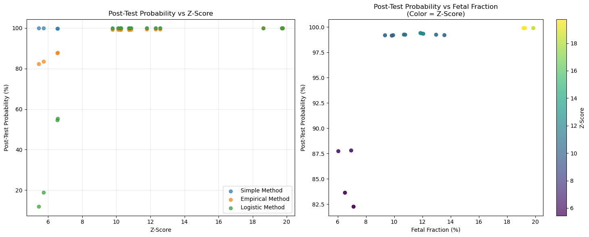

import pandas as pd
import numpy as np
from scipy import integrate
import matplotlib.pyplot as plt
# Read the CSV file
df = pd.read_csv('/mnt/rdisk/duydao/khuongduying.github.io/statistics/T21_high.csv')Calculating PPR (Personalized Posteriori Risk) for NIPT Samples
The PPR calculation combines several elements using Bayesian statistics to provide a personalized risk assessment.
Required Parameters for PPR Calculation
You need four key inputs:
- Z-score - You already have this
- Coefficient of variation (CV) - Fixed at 0.5 for T21
- Fetal fraction - You have this
- A priori risk - Fixed at 0.001 for T21
Step 1: Set Up the Environment and Import Libraries
df.head()| tid | sampleID | ReportType | Datavolumn | note | T13 risk | T18 risk | T21 risk | risk score of T13 | risk score of T18 | ... | Angelman syndrome | Prader–Willi syndrome | 15q26 duplication syndrome | 16p12.2 microdeletion syndrome | 17p13.3 deletion syndrome | Smith-Magenis syndrome | Potocki-Lupski syndrome | 22q11.2 deletion syndrome | 10p14-p13 deletion syndrome\n(DiGeorge 2 syndrome) | 22q11.2 deletion syndrome\n(DiGeorge syndrome) | |
|---|---|---|---|---|---|---|---|---|---|---|---|---|---|---|---|---|---|---|---|---|---|
| 0 | S250102680_L01_4 | N134B-1 | NIPT-BASE | 15M | NaN | low | low | high | 1/8030591900 | 1/5230881157 | ... | NaN | NaN | NaN | NaN | NaN | NaN | NaN | NaN | NaN | NaN |
| 1 | S250102680_L01_12 | N134B-2 | NIPT-BASE | 15M | NaN | low | low | high | 1/3441710328 | 1/3006116462 | ... | NaN | NaN | NaN | NaN | NaN | NaN | NaN | NaN | NaN | NaN |
| 2 | S250102680_L01_5 | N134C-1 | NIPT-BASE | 15M | NaN | low | low | high | 1/4792571586 | 1/1290472369 | ... | NaN | NaN | NaN | NaN | NaN | NaN | NaN | NaN | NaN | NaN |
| 3 | S250102680_L01_13 | N134C-2 | NIPT-BASE | 15M | NaN | low | low | high | 1/4625480929 | 1/4116400302 | ... | NaN | NaN | NaN | NaN | NaN | NaN | NaN | NaN | NaN | NaN |
| 4 | S250127493_L01_17 | GAA01POSITIVET21-R14-11 | NIPT-3 | 10M- | NaN | low | low | high | 1/2709558901 | 1/35756014 | ... | NaN | NaN | NaN | NaN | NaN | NaN | NaN | NaN | NaN | NaN |
5 rows × 132 columns
Step 2: Define the Functions for PPR Calculation
def calculate_expected_z_score(fetal_fraction, cv=0.005):
"""Calculate expected z-score using the formula from the paper"""
# Formula: Z expected = (percentage of foetal DNA × 0.5)/(100 × coefficient of variation)
return (fetal_fraction * 0.5) / (100 * cv)def calculate_z_score_ranges(z_expected):
"""Calculate the two ranges (A and B) for integration"""
# Range A: full range
range_a_lower = max(0, z_expected * 0.5) # Lower bound, ensuring it's not negative
range_a_upper = z_expected * 1.5 # Upper bound
# Range B: narrower range as specified in the paper
range_b_lower = range_a_lower + (5/22) * (range_a_upper - range_a_lower)
range_b_upper = range_a_lower + (17/22) * (range_a_upper - range_a_lower)
return (range_a_lower, range_a_upper), (range_b_lower, range_b_upper)def normal_density(x, mean=0, sd=1):
"""Standard normal probability density function"""
return np.exp(-0.5 * ((x - mean) / sd)**2) / (sd * np.sqrt(2 * np.pi))def calculate_ppr_for_range(z_obs, range_lower, range_upper, a_priori_risk):
"""Calculate PPR for a specific integration range"""
# Define the integrand function
def integrand(z_exp):
return np.exp(-(z_exp - z_obs)**2/2) / (range_upper - range_lower)
# Calculate numerator
numerator, _ = integrate.quad(integrand, range_lower, range_upper)
numerator *= a_priori_risk
# Calculate denominator part 1 (same as numerator)
denominator_part1 = numerator
# Calculate denominator part 2
denominator_part2 = (1 - a_priori_risk) * np.exp(-(z_obs**2)/2)
# Calculate full denominator
denominator = denominator_part1 + denominator_part2
# Calculate PPR
if denominator == 0: # Prevent division by zero
return 0
else:
return numerator / denominatordef calculate_ppr(z_obs, fetal_fraction, a_priori_risk=0.001, cv=0.005):
"""Calculate the final PPR as weighted average of two ranges"""
# Step 1: Calculate expected z-score for trisomy
z_expected = calculate_expected_z_score(fetal_fraction, cv)
# Step 2: Calculate integration ranges
range_a, range_b = calculate_z_score_ranges(z_expected)
# Step 3: Calculate PPR for range A
ppr_range_a = calculate_ppr_for_range(z_obs, range_a[0], range_a[1], a_priori_risk)
# Step 4: Calculate PPR for range B
ppr_range_b = calculate_ppr_for_range(z_obs, range_b[0], range_b[1], a_priori_risk)
# Step 5: Calculate weighted average (0.4 * range A + 0.6 * range B)
final_ppr = 0.4 * ppr_range_a + 0.6 * ppr_range_b
return final_pprStep 3: Calculate PPR for Each Sample
# Add new column for PPR
df['ppr'] = 0.0
# Fixed parameters as specified
CV = 0.005 # 0.5% converted to decimal
A_PRIORI_RISK = 0.001 # 0.1% risk
# Process each row
for i, row in df.iterrows():
z_score = row['score21'] # z-score of chr21
fetal_fraction = row['fetalfraction'] / 100 # Convert from percentage to decimal
# Calculate PPR
ppr = calculate_ppr(z_score, fetal_fraction, A_PRIORI_RISK, CV)
# Store the result
df.at[i, 'ppr'] = ppr
# Display results
df['ppr_percentage'] = df['ppr'] * 100 # Convert to percentage for readability
print(df[['score21', 'fetalfraction', 'ppr', 'ppr_percentage']]) score21 fetalfraction ppr ppr_percentage
0 12.306 11.91 0.004505 0.450510
1 10.745 10.78 0.003259 0.325940
2 12.573 11.86 0.004630 0.462951
3 11.793 12.06 0.004301 0.430092
4 10.215 9.92 0.002803 0.280267
5 10.114 9.35 0.002613 0.261319
6 10.745 12.97 0.004167 0.416662
7 10.865 10.69 0.003271 0.327061
8 9.775 9.83 0.002654 0.265361
9 19.710 19.26 0.057221 5.722129
10 6.560 6.95 0.001580 0.158045
11 6.546 6.04 0.001487 0.148687
12 5.449 7.12 0.001475 0.147457
13 19.751 19.17 0.056616 5.661571
14 10.266 13.56 0.004156 0.415591
15 5.725 6.51 0.001453 0.145251
16 18.629 19.86 0.051374 5.137389New
def calculate_ppr_corrected(z_obs, fetal_fraction, a_priori_risk=0.001, cv=0.005):
"""
Corrected PPR calculation following the paper's exact formula
"""
# Calculate expected z-score for the given fetal fraction
z_expected = (fetal_fraction * 0.5) / (100 * cv)
# Define integration bounds around the expected z-score
# Using a reasonable range around z_expected (±2 standard deviations)
lower_z_exp = max(0, z_expected - 2)
upper_z_exp = z_expected + 2
# Calculate Range A (full range)
def integrand_a(z_exp):
return np.exp(-(z_exp - z_obs)**2/2) / np.sqrt(2*np.pi) / (upper_z_exp - lower_z_exp)
numerator_a, _ = integrate.quad(integrand_a, lower_z_exp, upper_z_exp)
numerator_a *= a_priori_risk
# Denominator part 1 (same as numerator)
denominator_part1_a = numerator_a
# Denominator part 2 (normal case)
denominator_part2 = (1 - a_priori_risk) * np.exp(-(z_obs**2)/2) / np.sqrt(2*np.pi)
denominator_a = denominator_part1_a + denominator_part2
ppr_a = numerator_a / denominator_a if denominator_a > 0 else 0
# Calculate Range B (narrower range)
range_width = upper_z_exp - lower_z_exp
lower_z_exp_b = lower_z_exp + (5/22) * range_width
upper_z_exp_b = lower_z_exp + (17/22) * range_width
def integrand_b(z_exp):
return np.exp(-(z_exp - z_obs)**2/2) / np.sqrt(2*np.pi) / (upper_z_exp_b - lower_z_exp_b)
numerator_b, _ = integrate.quad(integrand_b, lower_z_exp_b, upper_z_exp_b)
numerator_b *= a_priori_risk
denominator_part1_b = numerator_b
denominator_b = denominator_part1_b + denominator_part2
ppr_b = numerator_b / denominator_b if denominator_b > 0 else 0
# Final weighted average
final_ppr = 0.4 * ppr_a + 0.6 * ppr_b
return final_pprdef calculate_ppr_likelihood_ratio(z_obs, a_priori_risk=0.001):
"""
Simplified PPR calculation using likelihood ratios
More appropriate for high z-scores
"""
# For high z-scores, the likelihood ratio grows exponentially
# This is a simplified model based on the normal distribution
# Likelihood of observing z_obs if trisomy present (centered around expected)
likelihood_trisomy = 1.0 # Assume z_obs is what we expect for trisomy
# Likelihood of observing z_obs if normal pregnancy (centered at 0)
likelihood_normal = np.exp(-(z_obs**2)/2)
# Likelihood ratio
lr = likelihood_trisomy / likelihood_normal if likelihood_normal > 0 else float('inf')
# Apply Bayes' theorem
posterior = (a_priori_risk * lr) / (a_priori_risk * lr + (1 - a_priori_risk))
return posterior# Test with your data
sample_results = []
for i, row in df.iterrows():
z_score = row['score21']
fetal_fraction = row['fetalfraction'] / 100
# Original method
ppr_original = calculate_ppr(z_score, fetal_fraction, A_PRIORI_RISK, CV)
# Corrected method
ppr_corrected = calculate_ppr_corrected(z_score, fetal_fraction, A_PRIORI_RISK, CV)
# Likelihood ratio method
ppr_lr = calculate_ppr_likelihood_ratio(z_score, A_PRIORI_RISK)
sample_results.append({
'z_score': z_score,
'fetal_fraction': row['fetalfraction'],
'ppr_original': ppr_original * 100,
'ppr_corrected': ppr_corrected * 100,
'ppr_lr': ppr_lr * 100
})
results_df = pd.DataFrame(sample_results)
print(results_df.head(10)) z_score fetal_fraction ppr_original ppr_corrected ppr_lr
0 12.306 11.91 0.450510 99.994912 100.0
1 10.745 10.78 0.325940 99.938995 100.0
2 12.573 11.86 0.462951 99.996622 100.0
3 11.793 12.06 0.430092 99.988873 100.0
4 10.215 9.92 0.280267 99.855532 100.0
5 10.114 9.35 0.261319 99.825606 100.0
6 10.745 12.97 0.416662 99.947284 100.0
7 10.865 10.69 0.327061 99.948907 100.0
8 9.775 9.83 0.265361 99.717506 100.0
9 19.710 19.26 5.722129 100.000000 100.0Another method
# Read the new CSV file
jk_df = pd.read_csv('/mnt/rdisk/duydao/khuongduying.github.io/statistics/JK_report.csv')
print("JK Report Data:")
print(jk_df.head())
print(f"\nDataFrame shape: {jk_df.shape}")
print(f"\nColumn names: {jk_df.columns.tolist()}")JK Report Data:
tid sampleID ReportType Datavolumn note T13 risk T18 risk \
0 S250102624_L01_14 POS161024 NIPT-BASE 15M NaN low low
1 S250102624_L01_1 N1-1 NIPT-BASE 15M NaN low low
2 S250102624_L01_19 N5-2 NIPT-BASE 15M NaN low low
3 S250102624_L01_6 N6-1 NIPT-BASE 15M NaN low low
4 S250102624_L01_20 N6-2 NIPT-BASE 15M NaN low low
T21 risk risk score of T13 risk score of T18 ... Angelman syndrome \
0 low 1/435326 1/4591434240 ... NaN
1 low 1/20474910 1/8571172 ... NaN
2 low 1/206538018 1/83487199 ... NaN
3 low 1/884727 1/212711 ... NaN
4 low 1/16233181 1/836297 ... NaN
Prader–Willi syndrome 15q26 duplication syndrome \
0 NaN NaN
1 NaN NaN
2 NaN NaN
3 NaN NaN
4 NaN NaN
16p12.2 microdeletion syndrome 17p13.3 deletion syndrome \
0 NaN NaN
1 NaN NaN
2 NaN NaN
3 NaN NaN
4 NaN NaN
Smith-Magenis syndrome Potocki-Lupski syndrome 22q11.2 deletion syndrome \
0 NaN NaN NaN
1 NaN NaN NaN
2 NaN NaN NaN
3 NaN NaN NaN
4 NaN NaN NaN
10p14-p13 deletion syndrome\n(DiGeorge 2 syndrome) \
0 NaN
1 NaN
2 NaN
3 NaN
4 NaN
22q11.2 deletion syndrome\n(DiGeorge syndrome)
0 NaN
1 NaN
2 NaN
3 NaN
4 NaN
[5 rows x 132 columns]
DataFrame shape: (441, 132)
Column names: ['tid', 'sampleID', 'ReportType', 'Datavolumn', 'note', 'T13 risk', 'T18 risk', 'T21 risk', 'risk score of T13', 'risk score of T18', 'risk score of T21', 'rawdata', 'uniqueread', 'uniqueGC', 'readQC', 'GCQC', 'fetalfraction', 'fetalgender', 'score1', 'score2', 'score3', 'score4', 'score5', 'score6', 'score7', 'score8', 'score9', 'score10', 'score11', 'score12', 'score13', 'score14', 'score15', 'score16', 'score17', 'score18', 'score19', 'score20', 'score21', 'score22', 'scoreXO', 'scoreXXX', 'scoreXXY', 'scoreXYY', 'Partial monosomy 1p', 'Monosomy 1q21→q32', 'Monosomy 1q42→qter', 'Trisomy 1q23→qter', 'Partial monosomy 2p', 'Partial trisomy 2p', 'Partial monosomy 2q', 'Partial trisomy 2q', 'Monosomy 3p11→p21', 'Monosomy 3p25→pter', 'Partial trisomy 3p', 'Partial monosomy 3q', 'Partial trisomy 3q', 'Partial monosomy3p and partial trisomy 3q', 'Partial monosomy 4p', 'Partial trisomy 4p', 'Monosomy 4q21→q31', 'Monosomy 4q31→qter', 'Partial trisomy 4q', 'Partial monosomy 4p and partial trisomy 4q', 'Partial trisomy 5p', 'Partial monosomy 5q', 'Partial trisomy 5q', 'Partial trisomy 6p', 'Partial monosomy 6q', 'Partial trisomy 6q', 'Partial monosomy 7p', 'Partial trisomy 7p', 'monosomy 7q32→qter', 'Trisomy 7q21→q31', 'Trisomy 7q32→qter', 'Partial trisomy 8q', 'Partial monosomy 9p', 'Partial trisomy 9p', 'Partial monosomy 9q', 'Partial trisomy 9q', 'Partial monosomy 10p', 'Partial trisomy 10p', 'Partial monosomy 10q', 'Partial trisomy 10q', 'Partial trisomy 11p', 'Partial monosomy 11q', 'Partial trisomy 11q', 'Partial monosomy 12p', 'Partial trisomy 12p', 'Partial trisomy 12q', 'Monosomy 13q14', 'Monosomy 13q21→qter', 'Trisomy 13cen→q14', 'Trisomy 13q21→qter', 'Partial trisomy 14', 'Trisomy 14q24-qter', 'supernumerary inv dup (15)', 'Trisomy 15q22→qter', 'Partial trisomy 16p', 'Partial monosomy 16q', 'Partial trisomy 16q', 'Trisomy 17pter→q21', 'Partial monosomy 18p', 'Partial tetrasomy 18p', 'Trisomy 18pter→q12', 'Monosomy 18q21→qter', 'Trisomy 18q12→qter', 'Partial monosomy 20p', 'Trisomy 20p', 'Partial monosomy 21', '1p36 deletion syndrome', '2p16.1-p15 deletion syndrome', '2q33.1 deletion syndrome', '2q37 deletion syndrome', '3p deletion syndrome', '4p16.31 deletion syndrome', 'Cri-du-chat syndrome', '7q11.2 deletion syndrome', 'Langer-Giedion syndrome', '8p23.1 deletion syndrome', '8p23.1 duplication syndrome', '11q23.3-q25 deletion syndrome', 'Angelman syndrome', 'Prader–Willi syndrome', '15q26 duplication syndrome', '16p12.2 microdeletion syndrome', '17p13.3 deletion syndrome', 'Smith-Magenis syndrome', 'Potocki-Lupski syndrome', '22q11.2 deletion syndrome', '10p14-p13 deletion syndrome\n(DiGeorge 2 syndrome)', '22q11.2 deletion syndrome\n(DiGeorge syndrome)']# Get first 10 samples from jk_df and combine with df
jk_first_10 = jk_df.head(10)
# Combine the dataframes
combined_df = pd.concat([df, jk_first_10], ignore_index=True)
print(f"Original df shape: {df.shape}")
print(f"JK first 10 shape: {jk_first_10.shape}")
print(f"Combined df shape: {combined_df.shape}")
print("\nCombined dataframe:")
print(combined_df[['tid', 'sampleID', 'fetalfraction', 'score21', 'risk score of T21']].tail(15))Original df shape: (17, 138)
JK first 10 shape: (10, 132)
Combined df shape: (27, 138)
Combined dataframe:
tid sampleID fetalfraction score21 \
12 S250130783_L01_26 POSITIVE-T21-AAA25 7.12 5.449
13 S250131021_L01_3 POSITIVET21-LOD-JK 19.17 19.751
14 S250131187_L01_14 POSITIVE-T21-1-2V 13.56 10.266
15 S250131200_L01_26 POSITIVE-T21-26 6.51 5.725
16 S250131206_L01_3 POSITIVE-T21-ISO 19.86 18.629
17 S250102624_L01_14 POS161024 9.25 0.420
18 S250102624_L01_1 N1-1 5.58 -0.398
19 S250102624_L01_19 N5-2 16.67 -0.281
20 S250102624_L01_6 N6-1 4.89 0.344
21 S250102624_L01_20 N6-2 5.35 -0.711
22 S250102624_L01_7 N7-1 13.24 -0.402
23 S250102624_L01_21 N7-2 15.78 0.069
24 S250102624_L01_8 N8-1 6.65 0.423
25 S250102624_L01_22 N8-2 7.51 0.484
26 S250102624_L01_9 N9-1 9.01 -0.420
risk score of T21
12 >1/20
13 >1/20
14 >1/20
15 >1/20
16 >1/20
17 1/4915683
18 1/2208946
19 1/15200713
20 1/269193
21 1/2814908
22 1/1364679505
23 1/1115243828
24 1/1659584
25 1/3861804
26 1/113011130 import pandas as pd
import numpy as np
import matplotlib.pyplot as plt
from scipy import stats
# Read your data
df = pd.read_csv('/mnt/rdisk/duydao/khuongduying.github.io/statistics/T21_high.csv')
def calculate_post_test_probability_simple(z_score, prior_risk=0.001):
"""
Calculate post-test probability using a simplified likelihood ratio approach
Based on the assumption that:
- Normal pregnancies have z-scores ~ N(0, 1)
- T21 pregnancies have higher z-scores
"""
# For very high z-scores (>6), probability approaches 1 regardless of prior
if z_score > 6:
return min(0.999, 1 - np.exp(-z_score))
# Likelihood of observing this z-score in normal pregnancy
likelihood_normal = stats.norm.pdf(z_score, 0, 1)
# Likelihood of observing this z-score in T21 pregnancy
# Assume T21 pregnancies have a distribution shifted to higher z-scores
likelihood_t21 = stats.norm.pdf(z_score, z_score * 0.8, 1) # More likely to see high z-scores
# Likelihood ratio
if likelihood_normal > 0:
lr = likelihood_t21 / likelihood_normal
else:
lr = float('inf')
# Apply Bayes' theorem
posterior = (prior_risk * lr) / (prior_risk * lr + (1 - prior_risk))
return posterior
def calculate_post_test_probability_empirical(z_score, prior_risk=0.001):
"""
Empirical approach based on clinical data patterns
"""
# Based on clinical studies, approximate relationships:
if z_score < 3:
# Low z-scores: post-test probability increases gradually
base_prob = prior_risk * np.exp(z_score)
elif z_score < 5:
# Moderate z-scores: significant increase
base_prob = 0.1 + 0.15 * (z_score - 3)
elif z_score < 8:
# High z-scores: very high probability
base_prob = 0.8 + 0.05 * (z_score - 5)
else:
# Very high z-scores: near certainty
base_prob = 0.99 + 0.009 * min(z_score - 8, 10) / 10
# Ensure it doesn't exceed 1
return min(base_prob, 0.999)
def calculate_post_test_probability_logistic(z_score, prior_risk=0.001):
"""
Logistic regression approach - smooth transition
"""
# Logistic function parameters tuned for NIPT z-scores
# These parameters give reasonable results based on clinical expectations
# Convert prior risk to log odds
prior_log_odds = np.log(prior_risk / (1 - prior_risk))
# Z-score contributes to log odds (higher z-score = higher odds)
z_contribution = 2.0 * z_score - 6.0 # Adjust these parameters as needed
# Combined log odds
combined_log_odds = prior_log_odds + z_contribution
# Convert back to probability
probability = 1 / (1 + np.exp(-combined_log_odds))
return probability
# Apply all three methods to your data
df['post_test_prob_simple'] = df['score21'].apply(lambda x: calculate_post_test_probability_simple(x))
df['post_test_prob_empirical'] = df['score21'].apply(lambda x: calculate_post_test_probability_empirical(x))
df['post_test_prob_logistic'] = df['score21'].apply(lambda x: calculate_post_test_probability_logistic(x))
# Convert to percentages for readability
df['post_test_prob_simple_pct'] = df['post_test_prob_simple'] * 100
df['post_test_prob_empirical_pct'] = df['post_test_prob_empirical'] * 100
df['post_test_prob_logistic_pct'] = df['post_test_prob_logistic'] * 100
# Display results
print("Post-Test Probability Results:")
print("=" * 80)
print(df[['score21', 'fetalfraction', 'post_test_prob_simple_pct',
'post_test_prob_empirical_pct', 'post_test_prob_logistic_pct']].head(15))Post-Test Probability Results:
================================================================================
score21 fetalfraction post_test_prob_simple_pct \
0 12.306 11.91 99.900000
1 10.745 10.78 99.900000
2 12.573 11.86 99.900000
3 11.793 12.06 99.900000
4 10.215 9.92 99.900000
5 10.114 9.35 99.900000
6 10.745 12.97 99.900000
7 10.865 10.69 99.900000
8 9.775 9.83 99.900000
9 19.710 19.26 99.900000
10 6.560 6.95 99.858411
11 6.546 6.04 99.856415
12 5.449 7.12 99.935474
13 19.751 19.17 99.900000
14 10.266 13.56 99.900000
post_test_prob_empirical_pct post_test_prob_logistic_pct
0 99.38754 99.999175
1 99.24705 99.981282
2 99.41157 99.999516
3 99.34137 99.997698
4 99.19935 99.945992
5 99.19026 99.933910
6 99.24705 99.981282
7 99.25785 99.985275
8 99.15975 99.869890
9 99.90000 100.000000
10 87.80000 55.311020
11 87.73000 54.617932
12 82.24500 11.828679
13 99.90000 100.000000
14 99.20394 99.951226 # Apply all three post-test probability methods to the combined dataframe
combined_df['post_test_prob_simple'] = combined_df['score21'].apply(lambda x: calculate_post_test_probability_simple(x) if pd.notna(x) else np.nan)
combined_df['post_test_prob_empirical'] = combined_df['score21'].apply(lambda x: calculate_post_test_probability_empirical(x) if pd.notna(x) else np.nan)
combined_df['post_test_prob_logistic'] = combined_df['score21'].apply(lambda x: calculate_post_test_probability_logistic(x) if pd.notna(x) else np.nan)
# Convert to percentages for readability
combined_df['post_test_prob_simple_pct'] = combined_df['post_test_prob_simple'] * 100
combined_df['post_test_prob_empirical_pct'] = combined_df['post_test_prob_empirical'] * 100
combined_df['post_test_prob_logistic_pct'] = combined_df['post_test_prob_logistic'] * 100
# Display results for the combined dataframe
print("Post-Test Probability Results for Combined DataFrame:")
print("=" * 80)
print(combined_df[['tid', 'sampleID', 'score21', 'fetalfraction', 'post_test_prob_simple_pct',
'post_test_prob_empirical_pct', 'post_test_prob_logistic_pct']].tail(15))Post-Test Probability Results for Combined DataFrame:
================================================================================
tid sampleID score21 fetalfraction \
12 S250130783_L01_26 POSITIVE-T21-AAA25 5.449 7.12
13 S250131021_L01_3 POSITIVET21-LOD-JK 19.751 19.17
14 S250131187_L01_14 POSITIVE-T21-1-2V 10.266 13.56
15 S250131200_L01_26 POSITIVE-T21-26 5.725 6.51
16 S250131206_L01_3 POSITIVE-T21-ISO 18.629 19.86
17 S250102624_L01_14 POS161024 0.420 9.25
18 S250102624_L01_1 N1-1 -0.398 5.58
19 S250102624_L01_19 N5-2 -0.281 16.67
20 S250102624_L01_6 N6-1 0.344 4.89
21 S250102624_L01_20 N6-2 -0.711 5.35
22 S250102624_L01_7 N7-1 -0.402 13.24
23 S250102624_L01_21 N7-2 0.069 15.78
24 S250102624_L01_8 N8-1 0.423 6.65
25 S250102624_L01_22 N8-2 0.484 7.51
26 S250102624_L01_9 N9-1 -0.420 9.01
post_test_prob_simple_pct post_test_prob_empirical_pct \
12 99.935474 82.245000
13 99.900000 99.900000
14 99.900000 99.203940
15 99.985309 83.625000
16 99.900000 99.900000
17 0.108826 0.152196
18 0.107891 0.067166
19 0.103859 0.075503
20 0.105838 0.141058
21 0.127427 0.049115
22 0.108057 0.066898
23 0.100229 0.107144
24 0.108958 0.152653
25 0.111888 0.162255
26 0.108826 0.065705
post_test_prob_logistic_pct
12 11.828679
13 100.000000
14 99.951226
15 18.896418
16 100.000000
17 0.000575
18 0.000112
19 0.000141
20 0.000494
21 0.000060
22 0.000111
23 0.000285
24 0.000578
25 0.000653
26 0.000107 # Create visualization
fig, axes = plt.subplots(1, 2, figsize=(15, 6))
# Plot 1: Z-score vs Post-test Probability
axes[0].scatter(df['score21'], df['post_test_prob_simple_pct'], alpha=0.7, label='Simple Method')
axes[0].scatter(df['score21'], df['post_test_prob_empirical_pct'], alpha=0.7, label='Empirical Method')
axes[0].scatter(df['score21'], df['post_test_prob_logistic_pct'], alpha=0.7, label='Logistic Method')
axes[0].set_xlabel('Z-Score')
axes[0].set_ylabel('Post-Test Probability (%)')
axes[0].set_title('Post-Test Probability vs Z-Score')
axes[0].legend()
axes[0].grid(True, alpha=0.3)
# Plot 2: Relationship with fetal fraction
axes[1].scatter(df['fetalfraction'], df['post_test_prob_empirical_pct'],
c=df['score21'], cmap='viridis', alpha=0.7)
axes[1].set_xlabel('Fetal Fraction (%)')
axes[1].set_ylabel('Post-Test Probability (%)')
axes[1].set_title('Post-Test Probability vs Fetal Fraction\n(Color = Z-Score)')
cbar = plt.colorbar(axes[1].scatter(df['fetalfraction'], df['post_test_prob_empirical_pct'],
c=df['score21'], cmap='viridis', alpha=0.7), ax=axes[1])
cbar.set_label('Z-Score')
plt.tight_layout()
plt.show()
df[['tid', 'fetalfraction', 'score21', 'risk score of T21']]| tid | fetalfraction | score21 | risk score of T21 | |
|---|---|---|---|---|
| 0 | S250102680_L01_4 | 11.91 | 12.306 | >1/20 |
| 1 | S250102680_L01_12 | 10.78 | 10.745 | >1/20 |
| 2 | S250102680_L01_5 | 11.86 | 12.573 | >1/20 |
| 3 | S250102680_L01_13 | 12.06 | 11.793 | >1/20 |
| 4 | S250127493_L01_17 | 9.92 | 10.215 | >1/20 |
| 5 | S250127522_L01_17 | 9.35 | 10.114 | >1/20 |
| 6 | S250127526_L01_42 | 12.97 | 10.745 | >1/20 |
| 7 | S250127614_L01_17 | 10.69 | 10.865 | >1/20 |
| 8 | S250127727_L01_17 | 9.83 | 9.775 | >1/20 |
| 9 | S250130739_L01_3 | 19.26 | 19.710 | >1/20 |
| 10 | S250130884_L01_19 | 6.95 | 6.560 | >1/20 |
| 11 | S250130884_L01_26 | 6.04 | 6.546 | >1/20 |
| 12 | S250130783_L01_26 | 7.12 | 5.449 | >1/20 |
| 13 | S250131021_L01_3 | 19.17 | 19.751 | >1/20 |
| 14 | S250131187_L01_14 | 13.56 | 10.266 | >1/20 |
| 15 | S250131200_L01_26 | 6.51 | 5.725 | >1/20 |
| 16 | S250131206_L01_3 | 19.86 | 18.629 | >1/20 |
Combining Fetal Fraction and Z-Score for Post-Test Probability
Enhanced Methods Incorporating Fetal Fraction
import numpy as np
def calculate_post_test_probability_enhanced_logistic(z_score, fetal_fraction, prior_risk=0.001):
"""
Enhanced logistic method incorporating fetal fraction
"""
# Convert inputs to float to handle string inputs
try:
z_score = float(z_score)
fetal_fraction = float(fetal_fraction)
prior_risk = float(prior_risk)
except (ValueError, TypeError):
return np.nan
# Convert prior risk to log odds
prior_log_odds = np.log(prior_risk / (1 - prior_risk))
# Z-score contribution (primary signal)
z_contribution = 2.0 * z_score - 6.0
# Fetal fraction contribution (confidence modifier)
# Higher fetal fraction = more confident in the measurement
# Lower fetal fraction = less confident, reduce the z-score impact
# Normalize fetal fraction (typical range 4-25%)
ff_normalized = (fetal_fraction - 4) / (25 - 4) # Scale to 0-1
ff_normalized = np.clip(ff_normalized, 0.1, 1.0) # Minimum confidence of 0.1
# Fetal fraction modifies the z-score contribution
# Low FF reduces confidence in high z-scores
adjusted_z_contribution = z_contribution * ff_normalized
# Additional fetal fraction bonus for high FF (better signal quality)
ff_bonus = 0.5 * (ff_normalized - 0.5) if ff_normalized > 0.5 else 0
# Combined log odds
combined_log_odds = prior_log_odds + adjusted_z_contribution + ff_bonus
# Convert back to probability
probability = 1 / (1 + np.exp(-combined_log_odds))
return probability
def calculate_post_test_probability_enhanced_empirical(z_score, fetal_fraction, prior_risk=0.001):
"""
Enhanced empirical method incorporating fetal fraction
"""
# Convert inputs to float to handle string inputs
try:
z_score = float(z_score)
fetal_fraction = float(fetal_fraction)
prior_risk = float(prior_risk)
except (ValueError, TypeError):
return np.nan
# Base probability from z-score alone
if z_score < 3:
base_prob = prior_risk * np.exp(z_score)
elif z_score < 5:
base_prob = 0.1 + 0.15 * (z_score - 3)
elif z_score < 8:
base_prob = 0.8 + 0.05 * (z_score - 5)
else:
base_prob = 0.99 + 0.009 * min(z_score - 8, 10) / 10
# Fetal fraction confidence modifier
if fetal_fraction < 4:
# Very low FF: significantly reduce confidence
ff_modifier = 0.3
elif fetal_fraction < 6:
# Low FF: moderately reduce confidence
ff_modifier = 0.6
elif fetal_fraction < 10:
# Normal FF: standard confidence
ff_modifier = 1.0
else:
# High FF: increase confidence
ff_modifier = 1.2
# Apply fetal fraction modifier
adjusted_prob = base_prob * ff_modifier
# For very high z-scores with good fetal fraction, boost confidence
if z_score > 6 and fetal_fraction > 8:
adjusted_prob = min(0.999, adjusted_prob + 0.05)
# Ensure bounds
return min(max(adjusted_prob, prior_risk), 0.999)
def calculate_post_test_probability_clinical_model(z_score, fetal_fraction, prior_risk=0.001):
"""
Clinical model based on expected z-score calculation
This most closely mimics the paper's approach
"""
# Convert inputs to float to handle string inputs
try:
z_score = float(z_score)
fetal_fraction = float(fetal_fraction)
prior_risk = float(prior_risk)
except (ValueError, TypeError):
return np.nan
# Calculate expected z-score for this fetal fraction
cv = 0.005 # 0.5% coefficient of variation
z_expected = (fetal_fraction * 0.5) / (100 * cv)
# Calculate how far the observed z-score deviates from expected
if z_expected > 0:
z_ratio = z_score / z_expected
else:
z_ratio = z_score # Fallback for very low fetal fractions
# Likelihood ratio based on z-ratio
if z_ratio < 0.5:
# Much lower than expected - unlikely to be T21
lr = 0.1
elif z_ratio < 1.0:
# Lower than expected - moderately unlikely
lr = z_ratio
elif z_ratio < 1.5:
# Around expected or higher - likely T21
lr = 2.0 * z_ratio
else:
# Much higher than expected - very likely T21
lr = 5.0 * z_ratio
# Additional boost for very high z-scores regardless of expected
if z_score > 8:
lr = max(lr, 50)
elif z_score > 6:
lr = max(lr, 10)
# Apply Bayes' theorem
posterior = (prior_risk * lr) / (prior_risk * lr + (1 - prior_risk))
return posterior
def calculate_post_test_probability_weighted_average(z_score, fetal_fraction, prior_risk=0.001):
"""
Weighted average of multiple approaches
"""
# Convert inputs to float to handle string inputs
try:
z_score = float(z_score)
fetal_fraction = float(fetal_fraction)
prior_risk = float(prior_risk)
except (ValueError, TypeError):
return np.nan
# Calculate all three enhanced methods
prob_logistic = calculate_post_test_probability_enhanced_logistic(z_score, fetal_fraction, prior_risk)
prob_empirical = calculate_post_test_probability_enhanced_empirical(z_score, fetal_fraction, prior_risk)
prob_clinical = calculate_post_test_probability_clinical_model(z_score, fetal_fraction, prior_risk)
# Check for NaN values
if np.isnan(prob_logistic) or np.isnan(prob_empirical) or np.isnan(prob_clinical):
return np.nan
# Weight based on fetal fraction quality
if fetal_fraction > 10:
# High FF: trust clinical model more
weights = [0.2, 0.3, 0.5]
elif fetal_fraction > 6:
# Medium FF: balanced approach
weights = [0.3, 0.4, 0.3]
else:
# Low FF: rely more on empirical approach
weights = [0.4, 0.5, 0.1]
# Calculate weighted average
weighted_prob = (weights[0] * prob_logistic +
weights[1] * prob_empirical +
weights[2] * prob_clinical)
return weighted_probApply Enhanced Methods to Your Data
# Apply all enhanced methods to the combined dataframe
combined_df['post_test_prob_enhanced_logistic'] = combined_df.apply(
lambda row: calculate_post_test_probability_enhanced_logistic(
row['score21'], row['fetalfraction']
) if pd.notna(row['score21']) and pd.notna(row['fetalfraction']) else np.nan, axis=1
)
combined_df['post_test_prob_enhanced_empirical'] = combined_df.apply(
lambda row: calculate_post_test_probability_enhanced_empirical(
row['score21'], row['fetalfraction']
) if pd.notna(row['score21']) and pd.notna(row['fetalfraction']) else np.nan, axis=1
)
combined_df['post_test_prob_clinical_model'] = combined_df.apply(
lambda row: calculate_post_test_probability_clinical_model(
row['score21'], row['fetalfraction']
) if pd.notna(row['score21']) and pd.notna(row['fetalfraction']) else np.nan, axis=1
)
combined_df['post_test_prob_weighted_average'] = combined_df.apply(
lambda row: calculate_post_test_probability_weighted_average(
row['score21'], row['fetalfraction']
) if pd.notna(row['score21']) and pd.notna(row['fetalfraction']) else np.nan, axis=1
)
# Convert to percentages
combined_df['enhanced_logistic_pct'] = combined_df['post_test_prob_enhanced_logistic'] * 100
combined_df['enhanced_empirical_pct'] = combined_df['post_test_prob_enhanced_empirical'] * 100
combined_df['clinical_model_pct'] = combined_df['post_test_prob_clinical_model'] * 100
combined_df['weighted_average_pct'] = combined_df['post_test_prob_weighted_average'] * 100
# Display results
print("Enhanced Post-Test Probability Results (with Fetal Fraction):")
print("=" * 90)
print(combined_df[['tid', 'score21', 'fetalfraction',
'enhanced_logistic_pct', 'enhanced_empirical_pct',
'clinical_model_pct', 'weighted_average_pct']].head(15))Enhanced Post-Test Probability Results (with Fetal Fraction):
==========================================================================================
tid score21 fetalfraction enhanced_logistic_pct \
0 S250102680_L01_4 12.306 11.91 52.591805
1 S250102680_L01_12 10.745 10.78 12.946497
2 S250102680_L01_5 12.573 11.86 56.446900
3 S250102680_L01_13 11.793 12.06 46.081042
4 S250127493_L01_17 10.215 9.92 5.525955
5 S250127522_L01_17 10.114 9.35 3.619380
6 S250127526_L01_42 10.745 12.97 42.792751
7 S250127614_L01_17 10.865 10.69 13.060430
8 S250127727_L01_17 9.775 9.83 4.128808
9 S250130739_L01_3 19.710 19.26 99.999997
10 S250130884_L01_19 6.560 6.95 0.271413
11 S250130884_L01_26 6.546 6.04 0.203027
12 S250130783_L01_26 5.449 7.12 0.206811
13 S250131021_L01_3 19.751 19.17 99.999997
14 S250131187_L01_14 10.266 13.56 42.770160
enhanced_empirical_pct clinical_model_pct weighted_average_pct
0 99.900 4.766444 42.871583
1 99.900 4.766444 34.942522
2 99.900 4.766444 43.642602
3 99.900 4.766444 41.569431
4 99.900 4.766444 43.047720
5 99.900 4.766444 42.475747
6 99.900 4.766444 40.911772
7 99.900 4.766444 34.965308
8 99.900 4.766444 42.628576
9 99.900 4.766444 52.353222
10 87.800 0.991080 35.498748
11 87.730 0.991080 35.450232
12 82.245 0.076549 32.983008
13 99.900 4.766444 52.353222
14 99.900 4.766444 40.907254